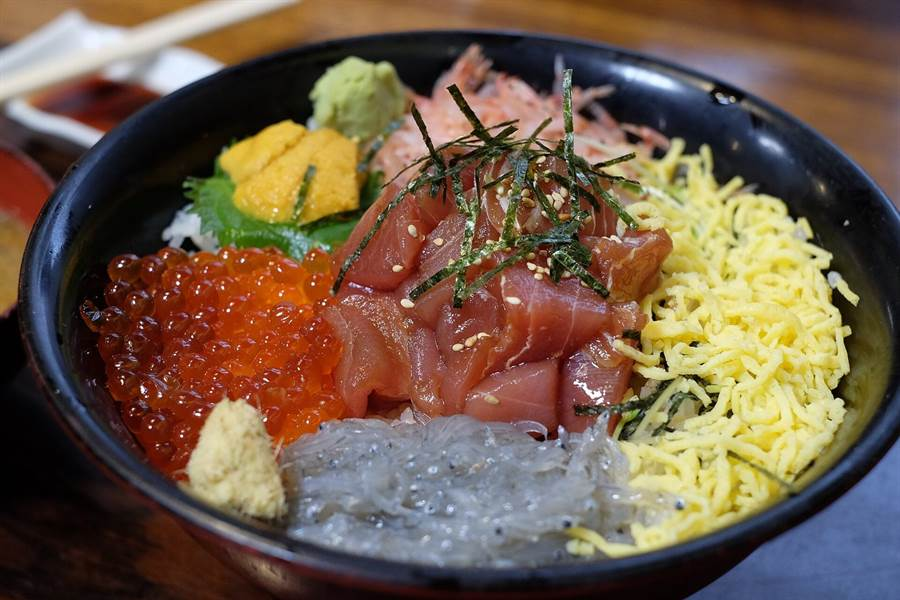

Giorno 12 di 15 · Lunedì 14 dicembre · Tokyo
Toyosu all'alba, Nakano Broadway e i 47 ronin
In sintesi
- 07:00 colazione di sushi al mercato di Toyosu.
- Da mezzogiorno Nakano Broadway, ventisette Mandarake in un palazzo, per quattro ore.
- Sera i 47 ronin a Sengaku-ji (o i negozi di Shinjuku) e karaoke a Kabukicho.
Itinerario
- 06:15Higashi-Shinjuku → mercato di Toyosu — sveglia presta, ed è l'unica volta del viaggio. La Oedo parte da sotto l'hotel e va diretta fino a Tsukishima, poi una fermata di Yurakucho fino a Toyosu e due di Yurikamome fino a Shijo-mae. Tre quarti d'ora, senza mai passare per Shinjuku Station.
- 07:00Colazione di sushi al mercato di Toyosu la cosa da non saltare — il mercato del pesce più grande del mondo. Al terzo piano dell'edificio dei grossisti una ventina di banchi servono sushi e kaisendon dalle sei del mattino, con il pesce comprato all'asta di sotto poche ore prima. Non è una versione turistica di niente: è il posto da cui il pesce parte per tutti gli altri ristoranti di Tokyo. Ai due nomi famosi (Sushi Dai, Daiwa Sushi) c'è coda anche a quest'ora; ai venti banchi accanto non c'è nessuno e il pesce viene dalla stessa asta. Un omakase del mattino sta sui 4.000-5.500 yen, un kaisendon sui 3.000. Per chi il sushi non lo ama c'è Odayasu, sullo stesso piano (vedi sotto). Lunedì 14 il mercato è aperto: verificato sul calendario ufficiale 2026, dove invece mercoledì 16 risulta chiuso.
- 08:30Il mercato dall'alto — dai corridoi vetrati si guardano dall'alto la sala dell'asta del tonno e il piano dei grossisti al lavoro: carrelli elettrici turret che sfrecciano, tonni interi segati con la lama lunga. Gratis, sempre aperto negli orari di mercato. (L'asta vera si tiene alle 5:30 e per vederla dovreste uscire di casa alle 4:20: non vale il prezzo sul resto della giornata.) Accanto c'è Senkyaku Banrai, la piazza in stile Edo del 2024, dove si passa la mezz'ora che avanza.
- 10:30Toyosu → Nakano — due fermate di Yurikamome fino a Toyosu, Yurakucho fino a Iidabashi e lì la Tozai, che ha il capolinea proprio a Nakano. Tre quarti d'ora con un cambio, dal mare all'ovest della città senza toccare Shinjuku.
- 11:30Sun Mall e uno spuntino — la galleria coperta che dalla stazione porta dritta al Broadway, cinque minuti di negozi di quartiere. Dopo la colazione delle sette basta poco: un onigiri, un korokke da una macelleria, e dentro.
- 12:00Nakano Broadway quattro ore, non due — quattro piani di collezionismo, ed è qui che Mandarake è nato: oggi occupa ventisette negozi separati nello stesso edificio, ognuno con la sua specializzazione — manga d'epoca, cel di animazione originali, figure vintage, kaiju, orologi, carte. Arrivate con le saracinesche che si alzano, perché qui i negozi aprono verso mezzogiorno.
- 13:15Il terzo piano — è quello del retrogaming e delle figure: Robot Robot (giocattoli anni '70-'90, Transformers, sofubi), Trio e i banchi di cartucce sciolte. Rispetto ad Akihabara i prezzi sono più bassi e i pezzi più rari, perché il pubblico è di collezionisti e non di turisti.
- 15:00Il seminterrato e i piani alti — nel seminterrato c'è il famoso soft serve a otto gusti sovrapposti di Daily Chiko; ai piani alti negozi minuscoli e stranissimi, dalle spade da samurai ai vinili. Vale la pena fare tutti e quattro i piani anche senza comprare, e ripassare dal negozio che vi ha lasciato il dubbio alle due.
- 16:15Nakano → Sengaku-ji (piano A) — JR Chuo fino a Shinjuku e Yamanote fino a Takanawa Gateway, poi sette minuti a piedi. Trentacinque minuti, ed è l'unica deviazione lunga della giornata: la fate perché quello che c'è dall'altra parte esiste solo oggi.
- 16:15Piano B: Nakano fino a sera e Shinjuku sulla strada di casa — i vicoli attorno alla stazione di Nakano, decine di izakaya minuscoli senza turisti, poi cinque minuti di JR fino a Shinjuku e l'ultimo giro dell'usato fatto in direzione hotel: Yodobashi fuori dall'uscita ovest, che occupa otto edifici uno per categoria, il Book Off di Shinjuku e il Don Quijote di Kabukicho a trecento metri dalla camera. Zero treni in più, si rientra a piedi e gli acquisti li posate subito.
- 17:00Gishi-sai, la festa dei 47 ronin solo il 14 dicembre — il 14 dicembre 1702 quarantasette samurai rimasti senza padrone assaltarono la residenza di Kira, gli tagliarono la testa e la portarono a piedi fin qui, alla tomba del loro signore Asano; il pozzo dove la lavarono è ancora nel cortile. Il governo li obbligò al seppuku e furono sepolti tutti accanto a lui: le quarantasette tombe sono lì, in file, e oggi non si vedono quasi, perché la gente ci brucia sopra incenso dalla mattina alla sera e il fumo riempie il cortile. Il tempio fa il Gishi-sai ogni 14 dicembre dal 1903: servizio funebre dei monaci, un corteo di 47 figuranti in armatura e le bancarelle di takoyaki e yakisoba in un posto che tutti gli altri 364 giorni è silenzioso. È la storia più raccontata del Giappone — kabuki, film, romanzi — e capita nel vostro calendario per caso. Gratis; il museo dei cimeli costa sui 500 yen. L'orario del corteo cambia di anno in anno (parte dallo Zojo-ji e le fonti danno ore diverse): se ci tenete a vederlo, controllate il programma sul sito del tempio a dicembre e venite prima. Alle cinque del pomeriggio il corteo è comunque finito: quello che resta sono le tombe, l'incenso e le bancarelle al buio, che è la parte migliore.
- 18:30Rientro a Kabukicho — col piano A da Sengaku-ji sono trenta minuti a ritroso; col piano B ci siete già. In entrambi i casi il Don Quijote sotto casa è aperto tutta la notte, quindi niente fretta.
- 19:15Cena a Kabukicho — sotto casa, senza prendere niente.
- 21:00Karaoke, la serata — è la sera giusta: siete rientrati a piedi, avete già posato gli acquisti in camera e Kabukicho è il quartiere con la più alta densità di karaoke del pianeta. Si prende un box privato in due, non una sala comune: si entra, si sceglie l'ora, si ordina da bere dal telefono sul tavolo. Circa 1.500 yen a testa l'ora con nomihodai (bevande illimitate) dopo le 22, meno senza. Karaoke Kan e Big Echo sono a trecento metri dall'APA e hanno il catalogo in caratteri latini — cercate il pulsante English sul telecomando, non alla reception. Chiudono alle 5 del mattino: l'ora la decidete voi, ma due bastano.
- 23:30Rientro — cinque minuti a piedi. Da qui in poi ne restano tre di giorni: è il momento di cominciare a incastrare le valigie.
Le tappe su Google Maps
Toccate una tappa e si apre in Google Maps: da lì Indicazioni vi dice treno e binario partendo da dove siete.
La mappa si carica solo se la toccate, per non consumare dati: il tracciato è in auto e serve solo a vedere dove stanno le tappe: gli spostamenti veri sono in treno, come nell'itinerario.
Dove mangiare

- ColazioneIl terzo piano del mercato di Toyosu il pasto della giornata — fermata Shijo-mae, edificio dei grossisti. Una ventina di banchi, aperti dalle 6:00 e chiusi verso le 14. Questo è il sushi del viaggio: pesce comprato all'asta al piano di sotto la mattina stessa, servito da chi lo compra. Chiedete l'omakase del banco (4.000-5.500 yen) e lasciate scegliere a loro; se preferite vederlo tutto insieme, il kaisendon è una ciotola di riso coperta di sashimi misto, sui 3.000. Solo contanti in diversi banchi.
- Per chi non ama il sushiOdayasu (とんかつ 小田保), allo stesso terzo piano dell'edificio dei grossisti — cucina del mercato dal 1935, trasferita qui da Tsukiji nel 2018: tonkatsu, fritti e il chashu egg, una fetta spessa di maiale arrosto con le uova al tegamino, che è il piatto per cui la gente fa la fila. Aperto dalle 5:30, ultimo ordine alle 14; solo contanti. Così a colazione vi sedete a due banconi vicini, e ognuno mangia quello che gli piace.
- Pranzoleggero e in piedi, lungo la Sun Mall o nel seminterrato del Broadway: dopo il sushi delle sette serve solo qualcosa che non vi porti via dai negozi.
- CenaKabukicho, sotto casa: stasera si torna con le borse piene e non ha senso cercare lontano. Yakiniku — carne alla griglia sul tavolo, che fate una volta sola nel viaggio — oppure una delle catene di tonkatsu e katsudon aperte fino a tardi. Poi karaoke a trecento metri.
Note e dritte
La logica della giornata: le due cose che vi interessano di più, il sushi e l'usato, messe in fila nello stesso giorno. Toyosu va all'alba perché il sushi vero si mangia la mattina, e dal mercato una sola linea con un cambio vi porta a Nakano nell'ora in cui alzano le saracinesche. Nakano Broadway ha così quattro ore invece di due, che è il tempo giusto per il posto con i pezzi migliori del Giappone. La sera resta quella di prima: Sengaku-ji o i negozi di Shinjuku, poi cena e karaoke dentro Kabukicho.
Perché Toyosu è qui e non al Giorno 14. Era programmato mercoledì 16, ma il calendario ufficiale 2026 del mercato centrale (shijou.metro.tokyo.lg.jp/calendar/2026) dà il 16 dicembre come giorno di chiusura, e con il mercato chiusi anche i banchi di sushi. Lunedì 14 invece è aperto. Spostarlo qui è costato la mattina a Kichijoji, ed è il cambio che toglie di meno: vedi sotto.
Due versioni della mattina, si decide la sera prima. La sveglia delle 5:45 va messa la sera prima, quindi la scelta si fa lì. Piano A: Toyosu all'alba e Nakano da mezzogiorno, come è scritto. Piano B: la mattina com'era, a Kichijoji. Alle 9:15 JR Chuo rapida da Shinjuku (15 minuti), mezz'ora al Parco Inokashira con i ginkgo gialli, poi le gallerie coperte di Sun Road con un Book Off grande, pranzo con i menchikatsu di manzo di Satou allo sportello accanto alla stazione (300-400 yen), e alle 13:45 dieci minuti di Chuo fino a Nakano. Costa due cose: Nakano torna a due ore scarse e, soprattutto, il sushi all'alba del viaggio salta, perché il 16 il mercato è chiuso e un altro giorno libero non c'è. Scegliete il B solo se la sera prima siete davvero a pezzi.
Due versioni del pomeriggio, si decide a pranzo. Piano A: alle 16:15 si molla Nakano e si va a Sengaku-ji per il Gishi-sai, che esiste solo oggi — costa un'ora e dieci di treni andata e ritorno e vi fa saltare i vicoli di Nakano e il giro di Yodobashi/Book Off a Shinjuku. Piano B: si resta al nord, Nakano fino alle 18:15 e negozi di Shinjuku sulla strada di casa. Il costo del piano A è più basso di quello che sembra, perché il giro di Shinjuku lo rifate identico il Giorno 15 — Yodobashi, Don Quijote e Book Off sono esattamente le stesse insegne dell'ultimo pomeriggio. Quello che perdete davvero sono gli izakaya di Nakano. Se piove forte o siete già cotti, piano B senza rimpianti.
Nakano vs Akihabara, in breve. Akihabara è più grande, più rumorosa e più cara, con i negozi tarati anche sui turisti. Nakano è un unico palazzo, frequentato da collezionisti giapponesi, con prezzi mediamente più bassi e un assortimento più profondo sul vintage. Se dovete comprare una cosa importante — una figure fuori produzione, un cel, una console rara — il posto è qui.
Un dettaglio sugli orari: Nakano Broadway apre a scaglioni, molti negozi verso le 12:00, e alcuni chiudono il mercoledì. Il lunedì va bene, ed è il motivo per cui da Toyosu non c'è fretta: arrivare prima delle undici e mezza vuol dire trovare le saracinesche.
Il karaoke è di stasera e non è un'idea da valutare: è nel programma. È l'unica cosa del viaggio che si fa in due e basta, in una stanza chiusa, senza vedere niente — ed è per questo che ci va. Serve una sera che finisca vicino a casa, e questa lo è: si cena e si canta dentro Kabukicho, a trecento metri dal letto. Sappiate però che oggi la sveglia è alle 5:45: un'ora di box basta, e il Giorno 13 parte alle 9:00. Non poteva essere il Giorno 8, già pieno con la cena da Fuunji e Golden Gai. Se stasera non ce la fate, il recupero è il Giorno 14, che adesso è la giornata più leggera della settimana: mattina senza sveglia e rientro da Ginza verso le 21:15. Il giorno dopo però si vola, quindi meglio stasera. L'importante è non saltarlo.
Se piove: è la giornata più a prova di pioggia del viaggio dopo Osaka — il mercato di Toyosu e il Broadway sono coperti, e fra i due c'è solo la metropolitana.
Se oggi non gira. Dipende da quale piano scegliete La mattina a Toyosu non si recupera: è l'unico giorno di mercato aperto rimasto nel viaggio. Col piano B del pomeriggio la giornata dopo pranzo è tutta liberabile: Nakano si accorcia e i negozi di Shinjuku li rifate identici il Giorno 15. Col piano A no, perché il Gishi-sai è il 14 dicembre e basta. Il karaoke delle 21:00 non conta come impegno: è a trecento metri dal letto e si decide all'ultimo.